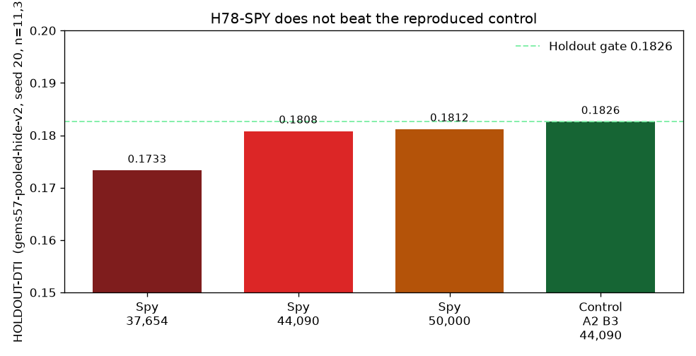

Download — inspection only
The file is format-valid. That is not permission to submit it. The filename contains DO-NOT-SUBMIT.
Download inspection GeoTIFF — do not submit Same file as .zip Writer receipt Run card Machine-readable status| Submission name | gems78-h78spy-inspection-44090dots-20261021T234636Z-277ac69b-DO-NOT-SUBMIT |
|---|---|
| Note (93 characters — do not paste this into a live slot) | NOT OK TO SUBMIT. H78-SPY holdout 0.1808 vs 0.1826 control; inspection only, not a projection |
| sha256 | 0a0767f2986ba13462440ae72340ea7e089860b18d469edfb0ab05689f0168f3 |
| Format | single-band float32, 3730×3292, EPSG:32611, transform (100, 0, 243350, 0, −100, 4508550), nodata unset, all finite, values exactly 0 or 1, 44,090 positives, 0 on the catalogue, 0 outside the footprint. Independent re-read: scripts/verify_tif.py all checks passed. |
| HOLDOUT-DTI | 0.1808 [0.1623, 0.1985] — evaluator gems57-pooled-hide-v2, seed 20, 11,321 withheld positives. Control (same folds, same emitter) 0.1826. Paired delta -0.0018 [-0.0069, +0.0037]. |
| ORGANIZER-CONFIRMED | none. This file has not been uploaded. A holdout number is not a leaderboard projection. |
| Uniqueness | Surface |Spearman| max 0.1398 (limit 0.90, pass). Forward 3 px overlap vs H78-A 0.9245 (limit 0.70, fail — duplicate). Stopped. |

Why h33-h33-2-b2 is the family's best owner-reported file, and whether we can beat 0.2778
owner-report The prompt lists 0.2778 for h33-h33-2-b2-20261004T220000Z-e5eb6e7e-zeros. That number is not ORGANIZER-CONFIRMED in this repository. The GEMSDOE32 page, re-fetched this session, says no organiser score exists for that file and its own note says projected 0.2747, unscored (IR-78-17). What was re-measured here, from the SHA-256-pinned raster c55bafc4…, is the structure:
- H19-5 is 121,131 line pixels. D2.8 is 44,090 binary dots, all of them on those lines. H33 is the 37,654-dot subset of D2.8.
- The 6,436 removed dots all lie 1.0–2.0 px from the catalogue. H33's own dots have nearest-neighbour spacing minimum 2.83 px, median 3.0 px, and median distance to the catalogue 19.6 px. Zero dots sit on the catalogue. Every value is 0 or 1, every cell finite, nodata unset.
- Along the owner-reported chain 0.1922 → 0.2600 → 0.2778 the detector did not change. The metric charges 0.2 per emitted pixel and gives each truth pixel at most one kernel credit (300 m triangle). Dots inside another dot's kernel, and dots within 200 m of a mapped fault that the organiser masks out of scoring, are cost without credit.
Beating 0.2778, if that owner-report is real, requires a field whose top ~35–45k dots carry more kernel credit on unmapped faults than H19-5's do. Thinning the same field further will not do it. This session tested two unrun hypotheses aimed at that field. Neither beat the holdout best already in this repo (0.1826), so neither is a slot.
| Hypothesis | Result HOLDOUT-DTI | Verdict |
|---|---|---|
| H78-TOOTH. Across-strike missing tooth: a gap kernel that peaks where distance to the visible catalogue equals the local array spacing. | Mechanism falsified. Withheld faults sit at median 0.39 spacings, not 1. gap1 mean 0.118 on truth vs 0.191 on background (AUC 0.514). The location-proxy features collapsed the learner onto the 48,340 training positives. No raster written. | negative |
| H78-SPY. Drop unlabeled cells scoring above the 15th percentile of labeled positives (19,100 of 450,000; cap not hit), refit once, same emitter. | 0.1808 [0.1623, 0.1985] vs control 0.1826. Paired CI includes 0 and the point estimate is lower. Deployment overlap with H78-A is 0.9245. | negative, duplicate, stop |
Named non-fault mimics, stated before the fits: regularly spaced drainages and dune ridges (tooth); lithologic contacts and range-front-parallel drainages (spy). Literature for the spacing claim, not re-fetched in full because those hosts are outside this sandbox: Ackermann, Schlische and Withjack 2001, JSG 23:1803, DOI 10.1016/S0191-8141(01)00028-1; Soliva and Benedicto 2006, DOI 10.1029/2004JB003507. Great Basin structural settings: Faulds et al., OSTI 1110517.
What this does not claim
- No file in this repository has an ORGANIZER-CONFIRMED score. Prompt figures 0.2778, 0.3195 and 0.4413 were not copied from a DrivenData receipt this session. The public leaderboard is login-walled from here.
- The catalogue hide-and-recover holdout cannot see a fault that does not resemble a withheld mapped component. A live gain is not implied by a holdout gain, and a holdout loss is not a live score either. It is enough to refuse a slot.
- The agent spent 0 weekly slots. Promotion is a human selector decision. The selector should not spend one on the file above.
- An earlier session's H78-A file (HOLDOUT-DTI 0.1826, its own promote gate) is preserved at h78a.html. This session did not copy it into a new submission. It is the control this session failed to beat, not a new result.
Next work, not started
- Do not retune tooth sigma or the spy percentile. Both failure modes are identified.
- A detector that is not a small perturbation of H78-A. Spy moved only 8% of dots more than 3 px away. The organizer reference is a U-Net (Monte Carlo CV); this sandbox is CPU-only and did not train one.
- A second holdout seed before any further emission change. Only seed 20 has been run.
- External rupture catalogues (2020 Monte Cristo Range) are not reachable from this sandbox (usgs.gov is not an allowed host). Do not treat that idea as viable here until the USGS ScienceBase release is actually fetched.
Read PROMPT.md at the start of every session. Status feed: docs/data/status.json.